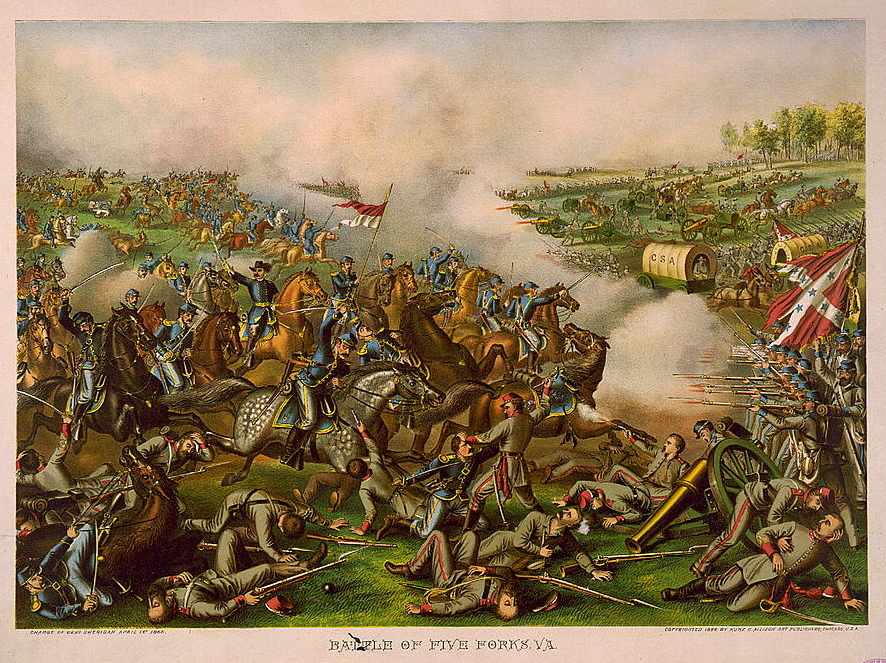
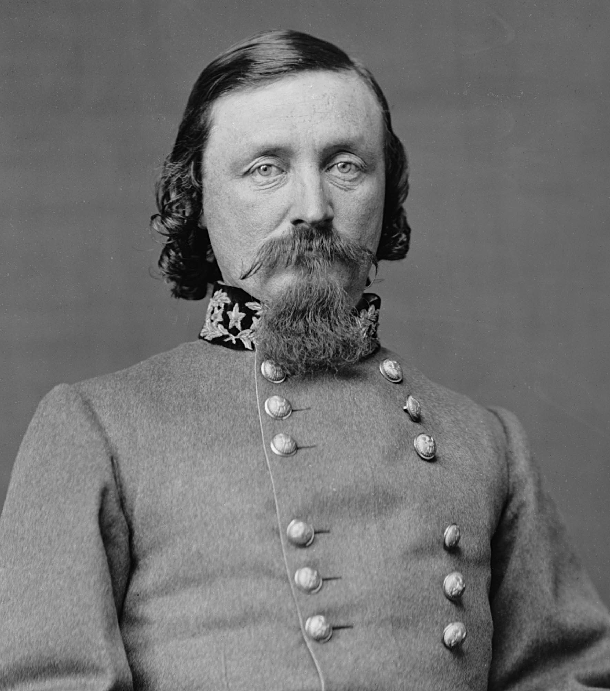

|
The battle at Five Forks, Virginia was the first
engagement in General Ulysses S. Grant's Appomattox
Campaign. The goal of the battle was to cut General Robert
E. Lee's supply lines coming down the South Side Railroad
|

An 1886 lithograph captures
the disarray of Confederate forces at Five Forks,
which proved to be the beginning of the end
for the Confederacy.
|
into Petersburg. If the Union succeeded, they would gain
Petersburg, force the evacuation of Richmond, and place
themselves between Lee and Johnston's Confederate armies,
thus preventing Lee from moving south. Grant placed Major
General Philip Sheridan at the head of the Union forces,
while Major General George Pickett was placed at the head of
the Confederate forces. Lee's instructions to Pickett were
clear: "Hold Five Forks at all hazards."
Lee positioned 19,000 soldiers at the Five Forks road
junction, a mere three miles from the South Side Railroad.
Pickett had at his command a division of his own along with
three mounted cavalry divisions commanded by Major General
Fitzhugh Lee (nephew of General Robert E. Lee). Sheridan
commanded the Union cavalry as well as being given the V
Corps, which was commanded by Major General G.K. Warren,
totaling almost 50,000 men.
At 1 p.m. on April 1st, Sheridan ordered the cavalry
|

Though George Pickett is better known
for the failed charge at the 1863 Battle of
Gettysburg that bears his name, it was his performance at Five Forks
that cost him his command.
|
divisions of Brigadier Generals George A. Custer and Thomas
A. Devin to attack Pickett's right flank, which was held by
Confederate cavalry. The plan was to then have the V Corps
jointly attack on Pickett's left, which was held by his own
infantry division. Unfortunately, Warren was slow to act
and the opportunity to crush Pickett nearly slipped by. By
4 p.m. out of Warren's three divisions, commanded by
generals Ayers, Griffen, Crawford, only Ayers' division was
in place to attack the 90-degree angle in Pickett's line.
Griffen's and Crawford's divisions had swung too far to
their right to be effective. In a moment of overconfidence
during the battle, Pickett and Fitzhugh Lee left the battle
briefly to have a drink, only to return to a surprise.
Ayers' division had been enough.
The Rebels were captured in large numbers, and Grant was
able to interpose his force between the two main Confederate
armies. The victory, which came to be called the
"Confederate Waterloo," was such a great success for the
Union that when on April 2nd General Grant ordered an attack
on the center of the Rebel lines at Petersburg, they broke
easily and the Confederates were forced to evacuate the city
in a rush. Five Forks also caused Lee to remove Pickett
from command, while Sheridan, despite the Union victory,
removed Warren from command due to his sluggish action in
the battle.
Source: Joan Waugh, ed., Facts on File Encyclopedia of American
History: Civil War and Reconstruction, 1856 to 1869 (New York: Facts on
File, 2003), 128-129.
|